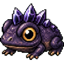

 Psychic
PsychicTap a stage to read its story.
Amethule is a squat dark-purple toadlet armored in bumpy stone-textured skin with a crown of small black crystal spikes sprouting from its head like a tiny jagged halo. Its large amber eye glows with a warm psychic light. In Sand Dunes' windswept hollows it sits perfectly still among the dark stones, indistinguishable from pebbles until it blinks. Young Amethules are said to dream the memories of crystals buried deep in the dunes - waking up knowing paths that haven't been walked in centuries.
Field note: Amethule can remain motionless for two days; experienced dune-walkers only spot it when its amber eye catches sunlight.
Sand Dunes. Amethule and its family are found in the Sand Dunes. See everyone who lives there.
Share a Bond Food that matches its types to become friends. Amethule loves:
A Bond Food is not a trick. It joins your spirit with the Kimuro's spirit, and only when it chooses you.
Print the Kimuro adventure packs: mazes, cards, a board game and Bond Mark medals.
See the printable packs